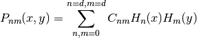
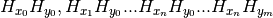

Hermite2D¶
-
class
astropy.modeling.polynomial.Hermite2D(x_degree, y_degree, x_domain=None, x_window=[-1, 1], y_domain=None, y_window=[-1, 1], n_models=None, model_set_axis=None, name=None, meta=None, **params)[source] [edit on github]¶ Bases:
astropy.modeling.polynomial.OrthoPolynomialBaseBivariate Hermite series.
It is defined as

where
H_n(x)andH_m(y)are Hermite polynomials.Parameters: x_degree : int
degree in x
y_degree : int
degree in y
x_domain : list or None, optional
domain of the x independent variable
y_domain : list or None, optional
domain of the y independent variable
x_window : list or None, optional
range of the x independent variable
y_window : list or None, optional
range of the y independent variable
**params : dict
keyword: value pairs, representing parameter_name: value
Other Parameters: fixed : a dict
A dictionary
{parameter_name: boolean}of parameters to not be varied during fitting. True means the parameter is held fixed. Alternatively thefixedproperty of a parameter may be used.tied : dict
A dictionary
{parameter_name: callable}of parameters which are linked to some other parameter. The dictionary values are callables providing the linking relationship. Alternatively thetiedproperty of a parameter may be used.bounds : dict
eqcons : list
A list of functions of length
nsuch thateqcons[j](x0,*args) == 0.0in a successfully optimized problem.ineqcons : list
A list of functions of length
nsuch thatieqcons[j](x0,*args) >= 0.0is a successfully optimized problem.Notes
This model does not support the use of units/quantities, because each term in the sum of Hermite polynomials is a polynomial in x and/or y - since the coefficients within each Hermite polynomial are fixed, we can’t use quantities for x and/or y since the units would not be compatible. For example, the third Hermite polynomial (H2) is 4x^2-2, but if x was specified with units, 4x^2 and -2 would have incompatible units.
Methods Summary
fit_deriv(x, y, *params)Derivatives with respect to the coefficients. Methods Documentation
-
fit_deriv(x, y, *params)[source] [edit on github]¶ Derivatives with respect to the coefficients.
This is an array with Hermite polynomials:

Parameters: x : ndarray
input
y : ndarray
input
params : throw away parameter
parameter list returned by non-linear fitters
Returns: result : ndarray
The Vandermonde matrix
-